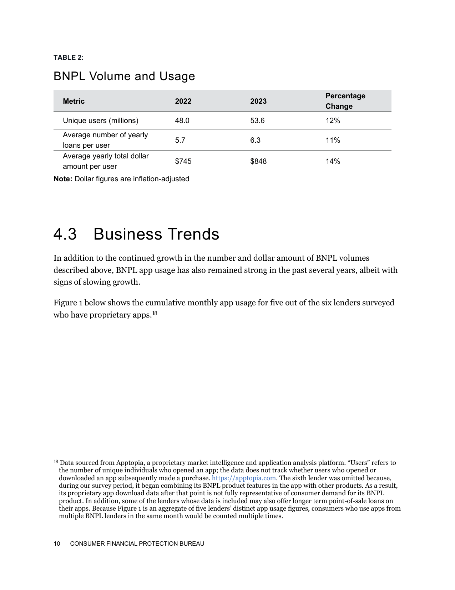
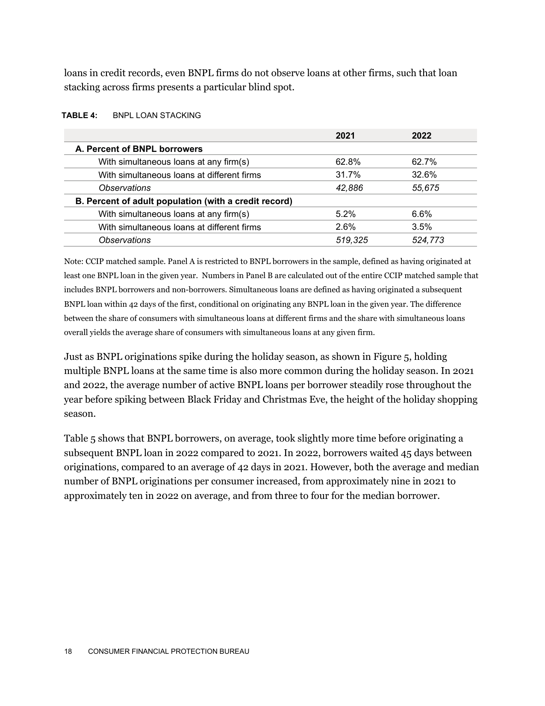
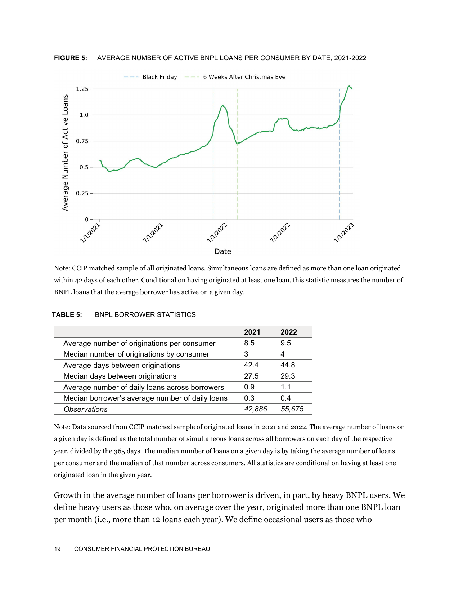
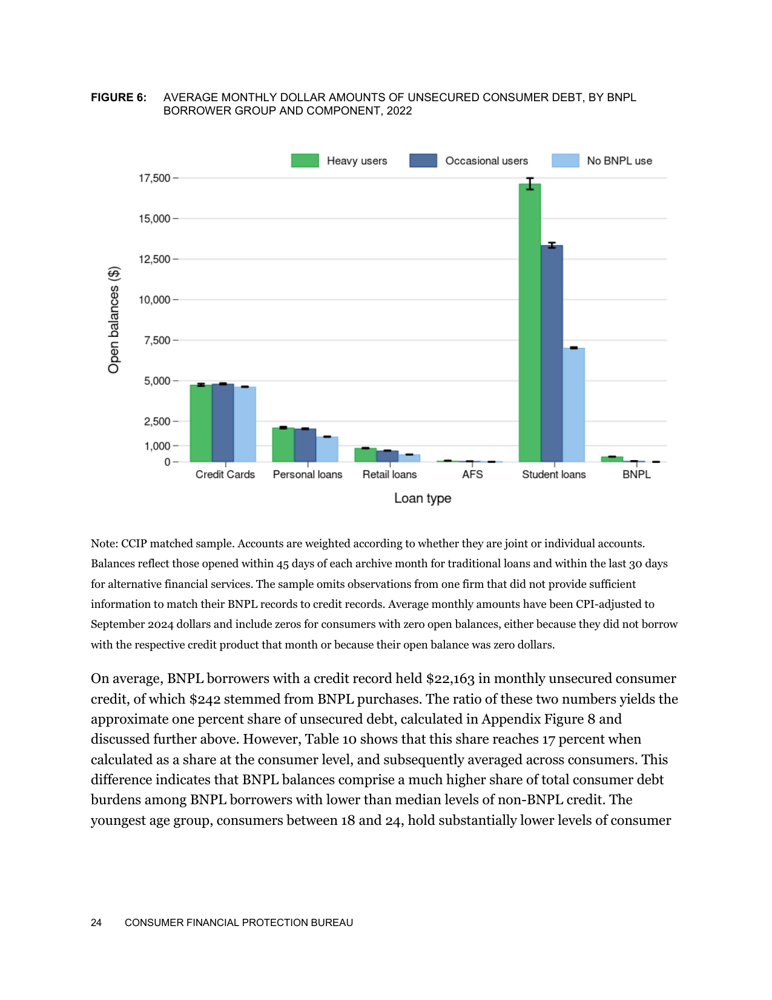

CFPB Data: 63% of 'Pay in 4' Users Stack Multiple Loans
Federal reports from the Consumer Financial Protection Bureau tracking six major Buy Now, Pay Later lenders show 53.6 million users taking an average of 6.3 loans per year, with 62.7% holding simultaneous BNPL loans in credit-panel data.
53.6 Million Pay-in-4 Borrowers
Across six major Buy Now, Pay Later firms tracked by the CFPB, 53.6 million borrowers took an average of 6.3 loans in a single year.

Source: CFPB BNPL Market Report Table 2 (Dec 2025)
62.7% Held Overlapping Loans
In CFPB credit-panel data, 62.7 percent of users held multiple BNPL loans at once, and 32.6 percent stacked loans across different apps.

Source: CFPB Consumer Use of BNPL Report Table 4 (Jan 2025)
Holiday Auto-Debits Collide
Figure 5 shows active Pay-in-4 loans spiking every holiday season as separate biweekly debits pile onto the same checking account.

Source: CFPB BNPL Report Figure 5 (Jan 2025)
Higher Unsecured Debt Loads
BNPL borrowers also carried higher credit card, retail, and personal loan balances, though the CFPB notes that pattern is correlation, not causation.

Source: CFPB BNPL Report Figure 6 (Jan 2025)
One Split Loan at a Time
Zero interest is still real debt. Never open a second Pay-in-4 plan until your current balance hits zero.
Source: CFPB BNPL Market & Consumer Reports (2025)
- CFPB Report: Consumer Use of Buy Now, Pay Later and Other Unsecured Debt (Jan 2025): https://files.consumerfinance.gov/f/documents/cfpb_BNPL_Report_2025_01.pdf
- CFPB Report: Buy Now, Pay Later Market Trends and Consumer Impacts (Dec 2025): https://files.consumerfinance.gov/f/documents/cfpb_buy-now-pay-later-market-trends-consumer-impacts_2025-12.pdf
Free 5-Hour Asset Builder OS + reading list. Check current edition availability directly on Amazon or explore Audible audiobook options.
Explore Related Books on Amazon Listen Free on AudibleTopics: buy now pay later, cfpb report, pay in 4, consumer debt, loan stacking, personal finance, credit cards